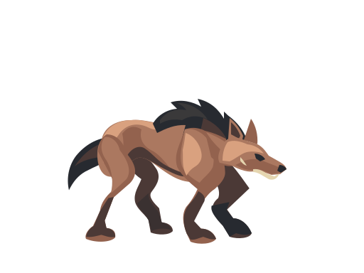
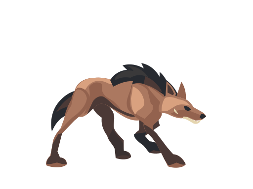
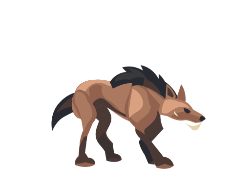
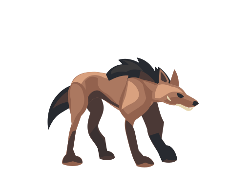
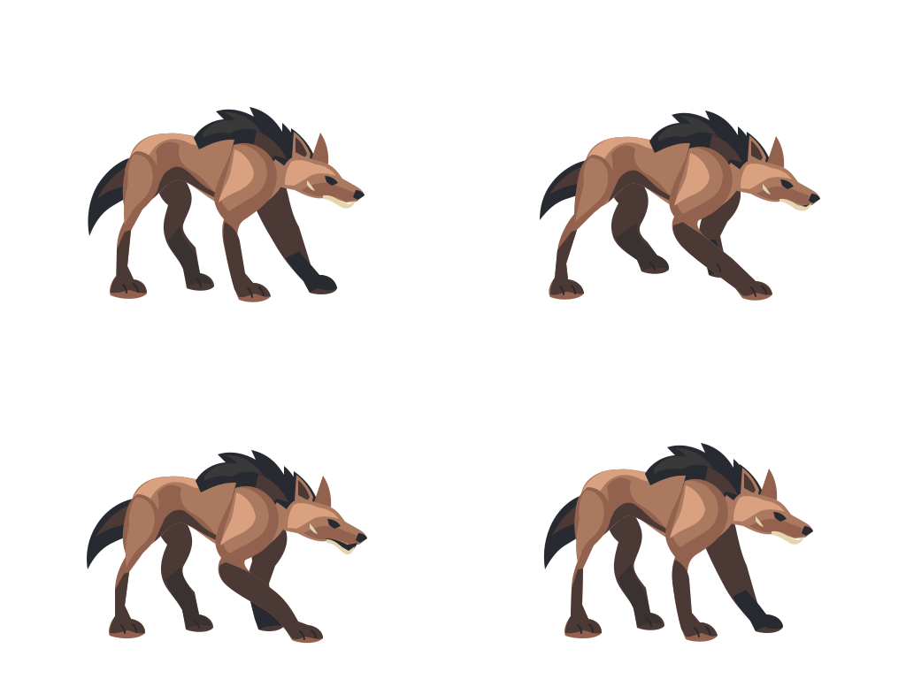

01 · Anticipation
Compress over support; track the target.
Four SE/front-quarter key poses for the same lean ash-russet quadruped. These are future physical-melee motion concepts; the game does not implement these four action phases.
Candidate-only · unassigned · no runtime selectionUpper views use a common 4× target scale. Below: exact 0.1 source scale, aiming for roughly 30×24px visible bounds, and a tighter 32px-wide canvas. The square grid provides a size reference; it is outside the SVG.

Compress over support; track the target.

Push from the hindquarters; reach low.

Plant the forepaw; absorb the reach.

Draw weight back toward the forequarters.
Self-review: manually fitted key poses are useful candidates. Raw generated launch/contact were too similar and remain held. Foot positions and compression now differ, but launch/contact separation is still subtle at native size. Timing, in-between transitions, continuous contact and final anatomy acceptance remain open.
The four raw extracts remain preserved: anticipation · launch · contact · recovery

Frozen SE reference · PR #146 · Admission and review · Exact prompt, settings and receipt · Validation
Sunburst native SVG with Terra author, high reference quality/complexity and high author effort. Continuity with the previous study is prompt-based; its artwork was not passed as an image reference. Raw extractions remove only their outer sheet translation. The displayed manual derivatives instead share one returned anticipation master; their separate limb fitting and neck/jaw edits are recorded in manual-authoring.json.